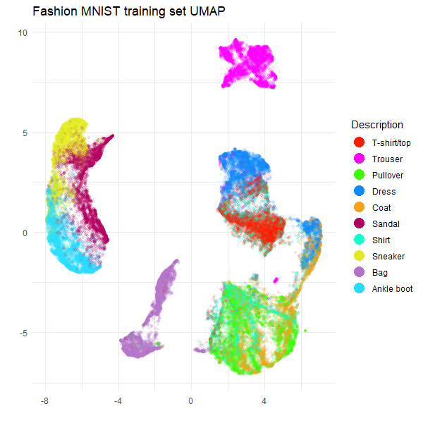
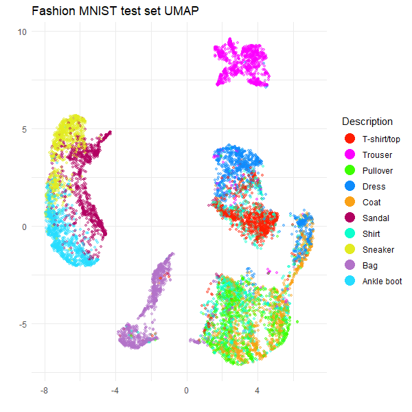

Using rnndescent for nearest neighbors
Source:vignettes/articles/rnndescent-umap.Rmd
rnndescent-umap.RmdThis is a companion article to the HNSW
article about how to use nearest neighbor data from other packages
with uwot. You should read that article as well as the on
uwot’s nearest
neighbor format for proper details. I’m going to provide minimal
commentary here.
The rnndescent
package can be used as an alternative to the internal Annoy-based
nearest neighbor method used by uwot. It is based on the
Python package PyNNDescent and
offers a wider range of metrics than other packages. See the supported
metrics article in the rnndescent documentation for
more details.
rnndescent can also work with sparse data.
uwot is not yet directly compatible with sparse data input,
but for an example of using rnndescent with sparse data see
and then using that externally generated nearest neighbor data with
uwot, see the sparse
UMAP article. Here we will use typical dense data and the typical
Euclidean distance.
First we need some data, which I will install via the
snedata package from GitHub:
# install.packages("pak")
pak::pkg_install("jlmelville/snedata")
# or
# install.packages("devtools")
# devtools::install_github("jlmelville/snedata")The HNSW article used the MNIST digits data, but to mix things up a bit I’ll use the Fashion MNIST data:
fashion <- snedata::download_fashion_mnist()
fashion_train <- head(fashion, 60000)
fashion_test <- tail(fashion, 10000)This is structured just like the MNIST digits, but it uses images of
10 different classes of fashion items (e.g. trousers, dress, bag). The
name of the item is in the Description column.
Installing rnndescent
Now install rnndescent from CRAN:
install.packages("rnndescent")
library(rnndescent)UMAP with nndescent
library(uwot)uwot can now use rnndescent for its nearest
neighbor search if you set nn_method = "nndescent". The
other settings are used to give reasonable results with batch mode
(although feel free to change n_sgd_threads to however many
threads you feel comfortable with your system using) and to return a
model we can use to embed the test set data.
fashion_train_umap <-
umap(
X = fashion_train,
nn_method = "nndescent",
batch = TRUE,
n_epochs = 500,
n_sgd_threads = 6,
ret_model = TRUE,
verbose = TRUE
)UMAP embedding parameters a = 1.896 b = 0.8006
Converting dataframe to numerical matrix
Read 60000 rows and found 784 numeric columns
Using alt metric 'sqeuclidean' for 'euclidean'
Initializing neighbors using 'tree' method
Calculating rp tree k-nearest neighbors with k = 15 n_trees = 21 max leaf size = 15 margin = 'explicit' using 6 threads
Using euclidean margin calculation
0% 10 20 30 40 50 60 70 80 90 100%
[----|----|----|----|----|----|----|----|----|----]
***************************************************
Extracting leaf array from forest
Creating knn using 164273 leaves
0% 10 20 30 40 50 60 70 80 90 100%
[----|----|----|----|----|----|----|----|----|----]
***************************************************
Running nearest neighbor descent for 16 iterations using 6 threads
0% 10 20 30 40 50 60 70 80 90 100%
[----|----|----|----|----|----|----|----|----|----]
***************************************************
Convergence: c = 132 tol = 900
Finished
Keeping 1 best search trees using 6 threads
0% 10 20 30 40 50 60 70 80 90 100%
[----|----|----|----|----|----|----|----|----|----]
***************************************************
Min score: 2.41727
Max score: 2.4626
Mean score: 2.44337
Using alt metric 'sqeuclidean' for 'euclidean'
Converting graph to sparse format
Diversifying forward graph
Occlusion pruning with probability: 1
0% 10 20 30 40 50 60 70 80 90 100%
[----|----|----|----|----|----|----|----|----|----]
***************************************************
Diversifying reduced # edges from 840000 to 240155 (0.02333% to 0.006671% sparse)
Degree pruning reverse graph to max degree: 22
Degree pruning to max 22 reduced # edges from 240155 to 239741 (0.006671% to 0.006659% sparse)
Diversifying reverse graph
Occlusion pruning with probability: 1
0% 10 20 30 40 50 60 70 80 90 100%
[----|----|----|----|----|----|----|----|----|----]
***************************************************
Diversifying reduced # edges from 239741 to 214714 (0.006659% to 0.005964% sparse)
Merging diversified forward and reverse graph
Degree pruning merged graph to max degree: 22
Degree pruning to max 22 reduced # edges from 302918 to 302882 (0.008414% to 0.008413% sparse)
Finished preparing search graph
Commencing smooth kNN distance calibration using 8 threads with target n_neighbors = 15
Initializing from normalized Laplacian + noise (using irlba)
Commencing optimization for 500 epochs, with 1359492 positive edges using 8 threads
Using method 'umap'
Optimizing with Adam alpha = 1 beta1 = 0.5 beta2 = 0.9 eps = 1e-07
0% 10 20 30 40 50 60 70 80 90 100%
[----|----|----|----|----|----|----|----|----|----|
**************************************************|
Optimization finishedI will grant you that rnndescent has a lot to
say for itself as it goes about its business. But you can always set
verbose = FALSE.
Transforming test data
Now we have a UMAP model we can transform the test set data. Now
notice that this looks exactly the same as the call we would make if we
had used Annoy for nearest neighors: all the information needed for
uwot to work out that it should use rnndescent
for querying new neighbors is encapsulated in the
fashion_train_umap model we generated.
fashion_test_umap <-
umap_transform(
X = fashion_test,
model = fashion_train_umap,
n_sgd_threads = 6,
verbose = TRUE
)Read 10000 rows and found 784 numeric columns
Processing block 1 of 1
Reading metric data from forest
Using alt metric 'sqeuclidean' for 'euclidean'
Querying rp forest for k = 15 with caching using 6 threads
0% 10 20 30 40 50 60 70 80 90 100%
[----|----|----|----|----|----|----|----|----|----]
***************************************************
Finished
Searching nearest neighbor graph with epsilon = 0.1 and max_search_fraction = 1 using 6 threads
Graph contains missing data: filling with random neighbors
Finished random fill
0% 10 20 30 40 50 60 70 80 90 100%
[----|----|----|----|----|----|----|----|----|----]
***************************************************
min distance calculation = 0 (0.00%) of reference data
max distance calculation = 1810 (3.02%) of reference data
avg distance calculation = 172 (0.29%) of reference data
Finished
Commencing smooth kNN distance calibration using 6 threads with target n_neighbors = 15
Initializing by weighted average of neighbor coordinates using 6 threads
Commencing optimization for 167 epochs, with 150000 positive edges using 6 threads
Using method 'umap'
Optimizing with Adam alpha = 1 beta1 = 0.5 beta2 = 0.9 eps = 1e-07
0% 10 20 30 40 50 60 70 80 90 100%
[----|----|----|----|----|----|----|----|----|----|
**************************************************|
FinishedAgain rnndescent is a lot chattier than when using
Annoy.
Plotting the results
Now to take a look at the results, using ggplot2 for
plotting, and Polychrome for a suitable categorical
palette.
install.packages(c("ggplot2", "Polychrome"))
library(ggplot2)
library(Polychrome)The following code creates a palette of 10 (hopefully) visually
distinct colors which will map each point to the type of fashion item it
represents. This is found in the Description factor column
of the original data.
palette <- as.vector(Polychrome::createPalette(
length(levels(fashion$Description)) + 2,
seedcolors = c("#ffffff", "#000000"),
range = c(10, 90)
)[-(1:2)])And here are the results:
ggplot(
data.frame(fashion_train_umap$embedding, Description = fashion_train$Description),
aes(x = X1, y = X2, color = Description)
) +
geom_point(alpha = 0.1, size = 1.0) +
scale_color_manual(values = palette) +
theme_minimal() +
labs(
title = "Fashion MNIST training set UMAP",
x = "",
y = "",
color = "Description"
) +
theme(legend.position = "right") +
guides(color = guide_legend(override.aes = list(size = 5, alpha = 1)))
ggplot(
data.frame(fashion_test_umap, Description = fashion_test$Description),
aes(x = X1, y = X2, color = Description)
) +
geom_point(alpha = 0.4, size = 1.0) +
scale_color_manual(values = palette) +
theme_minimal() +
labs(
title = "Fashion MNIST test set UMAP",
x = "",
y = "",
color = "Description"
) +
theme(legend.position = "right") +
guides(color = guide_legend(override.aes = list(size = 5, alpha = 1)))
These results are typical for Fashion MNIST result with UMAP. For
example, see the first image in part
of the Python UMAP documentation. So it looks like
rnndescent with its default settings does a good job with
this dataset.
A Minor Advantage of using rnndescent
If you use nn_method = "nndescent" then the UMAP model
returned with ret_model = TRUE can be saved and loaded
using the standard R functions saveRDS and
readRDS. You don’t need to the use
uwot-specific save_uwot and
load_uwot, nor do you need to worry about unloading the
model with unload_uwot, as you must with Annoy-based UMAP
models. This is a consequence of rnndescent storing all its
index-related data in pure R (no wrapping of existing C++ classes), but
be aware that this can lead to much larger models on disk and in
RAM.
Using rnndescent externally
If you want more control over the behavior of rnndescent
then you can use it directly to create a nearest neighbor graph and then
pass that result to the nn_method argument of
umap. This isn’t usually necessary and if you do
want more control I recommend using the nn_args argument of
umap, which is a list of arguments to pass directly to
rnndescent. If you decide to use rnndescent
directly, the following section mainly uses default argument but
demonstrates a workflow that can be customized for your own needs. The
resulting UMAP plots will be essentially identical to those that are
output when using nn_mmethod = "nndescent".
Build an index for the training data
First, we will build a search index using the training data. You
should use as many threads (n_threads) as you feel
comfortable with. You can also set verbose = TRUE, but when
building an index you will see a lot of output so I won’t reproduce that
here. The k parameter is the number of nearest neighbors
that we are looking for. The index is tuned to work well for that number
of neighbors. The metric parameter is the distance metric
to use, but the default is Euclidean, so we don’t need to specify that.
Finally, there is a stochastic aspect to the index building. You may get
slightly different results from me, but I am leaving the seed unset so
that we must both live with the inherently random nature of the index
building process.
fashion_index <- rnnd_build(fashion_train, k = 15, n_threads = 6)What’s in the returned index? A bunch of stuff:
names(fashion_index)Most of that is there to support searching the index. What we want is
the graph. This is a list with two elements,
idx and dist, which contain the nearest
neighbor indices and distances respectively. The nearest neighbor of
each item is itself, so we expect the first column of idx
to be the sequence 1, 2, 3, … and the first column of dist
to be all zeros.
fashion_index$graph$idx[1:3, 1:3]
fashion_index$graph$dist[1:3, 1:3]With other nearest neighbor methods like HNSW and Annoy, you would
have to run a separate query step to get the k-nearest neighbors for the
data used to build the index. One of the advantages of
rnndescent is that you can get this data directly from the
index without the separate query step. Note that you can still query the
index if you want to, and those results might be a bit more accurate,
but I am quietly confident that the results from the index are
sufficient for UMAP.
Query the test data
To get the test set neighbors, query the index with the test data:
fashion_test_query_neighbors <-
rnnd_query(
index = fashion_index,
query = fashion_test,
k = 15,
n_threads = 6,
verbose = TRUE
)
fashion_test_query_neighbors$idx[1:3, 1:3]
fashion_test_query_neighbors$dist[1:3, 1:3] [,1] [,2] [,3]
[1,] 482.2966 681.9905 708.4991
[2,] 1308.0019 1329.3134 1382.7317
[3,] 466.0322 538.5378 555.8795As we are querying the test data against the training data, the nearest neighbor of any test item is not the test item itself.
We now have all the nearest neighbor data we need. The good news is
that it’s already in a format that uwot can use so we can
proceed straight to running UMAP.
Using rnndescent nearest neighbors with UMAP
UMAP on training data
To use pre-computed nearest neighbor data with uwot pass
it as the nn_method parameter. In this case, that is the
graph item in fashion_index. See the HSNW
article for more details on the other parameters, but this is designed
to give pretty typical UMAP results.
fashion_train_umap <-
umap(
X = NULL,
nn_method = fashion_index$graph,
batch = TRUE,
n_epochs = 500,
n_sgd_threads = 6,
ret_model = TRUE,
verbose = TRUE
)UMAP embedding parameters a = 1.896 b = 0.8006
Commencing smooth kNN distance calibration using 6 threads with target n_neighbors = 15
Initializing from normalized Laplacian + noise (using irlba)
Commencing optimization for 500 epochs, with 1359454 positive edges using 6 threads
Using method 'umap'
Optimizing with Adam alpha = 1 beta1 = 0.5 beta2 = 0.9 eps = 1e-07
0% 10 20 30 40 50 60 70 80 90 100%
[----|----|----|----|----|----|----|----|----|----|
**************************************************|
Optimization finished
Note: model requested with precomputed neighbors. For transforming new data, distance data must be provided separatelyTransforming test data
Now we have a UMAP model we can transform the test set data. Once
again we don’t need to pass in any test set data except the neighbors as
nn_method:
fashion_test_umap <-
umap_transform(
X = NULL,
model = fashion_train_umap,
nn_method = fashion_test_query_neighbors,
n_sgd_threads = 6,
verbose = TRUE
)Read 10000 rows
Processing block 1 of 1
Commencing smooth kNN distance calibration using 6 threads with target n_neighbors = 15
Initializing by weighted average of neighbor coordinates using 6 threads
Commencing optimization for 167 epochs, with 150000 positive edges using 6 threads
Using method 'umap'
Optimizing with Adam alpha = 1 beta1 = 0.5 beta2 = 0.9 eps = 1e-07
0% 10 20 30 40 50 60 70 80 90 100%
[----|----|----|----|----|----|----|----|----|----|
**************************************************|
FinishedAt this point you can plot the results, which will resemble those shown earlier.
A potentially simpler workflow
If you don’t want to transform new data, you can make life a bit
easier. Instead of rnnd_build, use rnnd_knn
which behaves a lot like rnnd_build but doesn’t preserve
the index or do any index preparation. This saves time and the nearest
neighbor results are returned directly in the return result. Let’s use
the full Fashion MNIST results as an example:
You can then pass fashion_knn to
nn_method:
fashion_umap <-
umap(
X = NULL,
nn_method = fashion_knn,
batch = TRUE,
n_epochs = 500,
n_sgd_threads = 6,
verbose = TRUE
)(I have spared you the log output). We don’t need to pass
ret_model = TRUE here because we can’t transform new data.
Here is the UMAP plot for the full Fashion MNIST dataset:
ggplot(
data.frame(fashion_umap, Description = fashion$Description),
aes(x = X1, y = X2, color = Description)
) +
geom_point(alpha = 0.1, size = 1.0) +
scale_color_manual(values = palette) +
theme_minimal() +
labs(
title = "Fashion MNIST UMAP",
x = "",
y = "",
color = "Description"
) +
theme(legend.position = "right") +
guides(color = guide_legend(override.aes = list(size = 5, alpha = 1)))Everything looks as expected. However, if you think you might want to
transform new data in the future, then you will need to completely
restart the process, with rnnd_build and using
ret_model = TRUE.
Conclusions
If you want to use rnndescent with uwot,
then:
- Install
rnndescentand then usenn_method = "nndescent".
That handles most cases. If you want to use precomputed nearest neighbors, then:
- Run
rnndescent::rnnd_buildon your training data. - Run
uwot::umapwithnn_methodset to thegraphitem in the result ofrnnd_buildand remember to setret_model = TRUE.
To transform new data:
- Run
rnndescent::rnnd_queryon your test data, using the result ofrnnd_buildas theindexparameter. - Run
uwot::umap_transformwithnn_methodset to the result ofrnnd_query.
If you don’t want to transform new data, then it’s even easier:
- Run
rnndescent::rnnd_knnon your training data. - Run
uwot::umapwithnn_methodset to the result ofrnnd_knn.